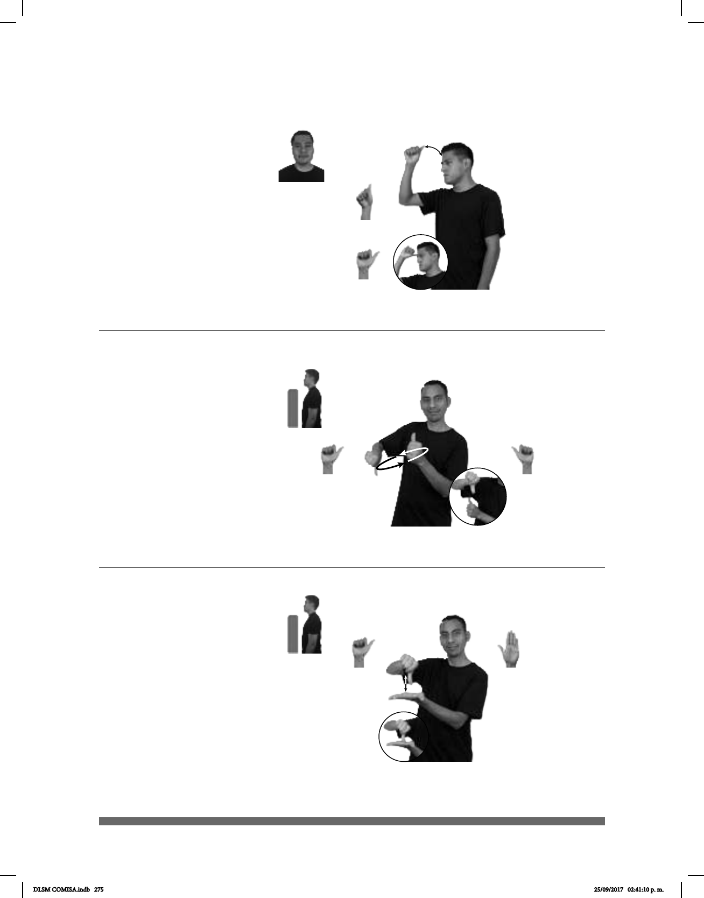

275
Seña: SM
Seña que pasa de
A.1 a A.10
Palma hacia la
izquierda.
Sobre la frente.
Recto hacia arriba
repetidamente.
País del sudeste
asiático cuya capital es Nueva
Delhi.
Seña: SB
MD y MB A.1
MD y MB palmas
hacia la derecha.
A la altura del pecho.
MD sobre MB.
Las manos se
mueven formando un círculo hacia
la izquierda simultáneamente.
v. tr. Cambiar
recíprocamente algo o a
alguien entre dos o más personas,
instituciones, países, etc., o relación
en la que las partes que la forman
dan y reciben entre sí algo de cierta
cosa.
(A-127)
(A-128)
Alternar
INDIA SÉPTIMO PAÍS MÁS GRANDE MUNDO
La India es el séptimo país más grande del mundo.
RELEVO INTÉRPRETE POR-FAVOR
Por favor releva al intérprete.
Seña: SB
MD A.1, MB
B-P.2
MD palma hacia la
derecha. MB palma hacia arriba.
A la altura del pecho.
MD sobre MB.
La MD simula varios
saltos sobre MB.
País de Medio Oriente
cuya capital es Therán.
(A-129)
IRÁN BANDERA COLOR VERDE BLANCO ROJO
Los colores de la bandera de Irán son verde blanco y rojo.
DLSM COMISA.indb 275 25/09/2017 02:41:10 p. m.